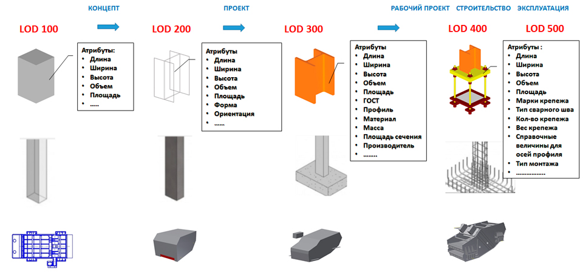
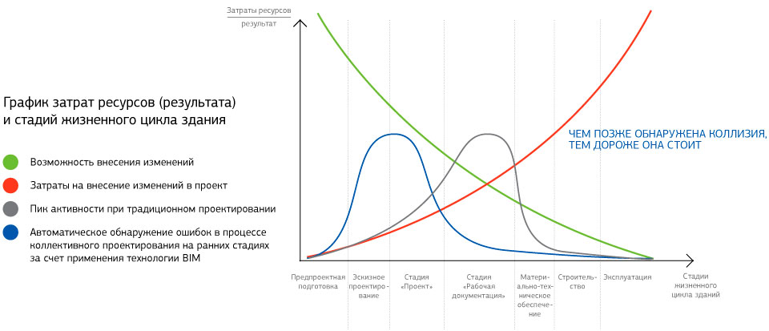

Деталізація BIM-моделі
Одним з переваг застосування BIM-технологій є те, що інформація про кожен елемент будівлі з ходом процесу проектування накопичується, доповнюється і розширюється. Здавалося б, те ж можна було б сказати і про традиційне «креслярське» проектування, однак усталена форма зберігання, перенесення і розвитку інформації про об'єкт будівництва не досконала і вимагає безлічі додаткових дій.
Іноді, в CAD-проектуванні, перенесення інформації з попередньої стадії на наступну не представляється доцільним або можливим в принципі. Так, наприклад, креслення і навіть візуалізація попереднього проекту (концепції або ескізу) в рідкісних випадках застосовується при розробці стадії П. У той же час, при підготовці попереднього проекту в BIM, вся інформація (100%), отримана на цій стадії успішно використовується і надалі. Це дозволяє не тільки прискорити процес розробки проекту, але і виконувати кожну наступну дію, спираючись на отриману раніше інформацію.
Рівні деталізації BIM-моделі
Для BIM характерні такі поняття, як LOD і LOI.
LOD (Level of Model Detail) - рівень опрацювання (деталізації) BIM-моделі, графічного контенту.
LOI (Level of Model Information) - рівень опрацювання інформації, неграфічного (атрибутивного) контенту.
На кожному з етапів розробки проекту LOD і LOI йдуть паралельно в бік збільшення. Вони відносяться, як до всієї моделі, так і до окремих її елементів. Однозначний консенсус в цьому питанні ще не було досягнуто, однак прийнято вважати початковим рівнем деталізації моделі - LOD 100 (концептуальні рішення), а завершальним - LOD 500 (експлуатація та ремонт).

LOD 100 (Концепт) - модель представлена у вигляді об'ємних формотворчих елементів з приблизними розмірами, формою і орієнтацією.
LOD 200 (передпроектні рішення) - модель представлена у вигляді об'єкта або збірки, як характерний представник системи будівлі з приблизними розмірами, формою, просторовим положенням, орієнтацією і необхідною неграфічною інформацією.
LOD 300 (Стадія П) - модель представлена у вигляді об'єкта або збірки, що належить конкретній системі будівлі з точними розмірами, формою, просторовим положенням, орієнтацією, зв'язками і необхідною неграфічною інформацією.
LOD 400 (Стадія Р) - модель представлена у вигляді конкретної збірки з детальними розмірами, формою, просторовим положенням, орієнтацією, чіткими зв'язками, даними по виготовленню і монтажу, а також іншою необхідною неграфічною інформацією.
LOD 500 (Експлуатація) - модель представлена у вигляді конкретної збірки з фактичними розмірами, формою, просторовим положенням, орієнтацією і неграфічною інформацією достатньою для передачі моделі в експлуатацію.
Ціна помилки проектування
Як це не дивно, але оцінка повного життєвого циклу будівлі дає зрозуміти, що на проектування доводиться сама незначна частка вкладень - усього близько 5%. Однак помилки, допущені при проектуванні в результаті, можуть привести до величезних незапланованих витрат на більш пізніх етапах роботи, а саме будівництві і експлуатації (частіше будівництві).
